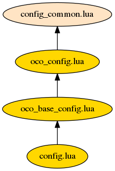

Lua Configuration¶
Lua is a lightweight, embeddable scripting language. It was chosen to manage the configuration over a declarative approach due to its flexibility. The code itself was written in a manner such that the C++ portions are components that have minimal dependency on each other and adhere to well defined interfaces. The Lua configuration selects which components are used and makes them aware of each other. The configuration files themselves are written in layers where more specific configurations extend the general. At the bottom level are configurations that implement instrument specific arrangements of components. These files specify which files are involved in the processing as well as algorithmic choices. At this level the Lua code looks like declarative keyword/value configuration files. This approach combines flexibility with simplicity for end users.
The configuration loads input data, building a priori and initial guess vectors as it processes components. Components are connected to each other and passed their input in a hierarchal manner. Dependent components are loaded first so they are initialized and can be passed to components that need them. The top most level is the forward model component. It is created last and when ready called to start iterative execution as described in previous sections.
Indexing¶
It is worth noting that Lua uses 1-based indexing unlike the C++ code that is wrapping. Therefore care must be made when interacting with objects. If the object is pure Lua then use 1-based indexing. If you are dealing with, say a vector from the C++ world then it will be 0-based.
Organization¶
There are many separate Lua files involved in a single execution. These files have been organized such that the files with more general functionality are extended by files which use more specific implementation details. One of the configuration Lua files typically extends another by using the Lua require statement and Lua’s table inheritance.
The graph below shows the organizational hierarchy for the OCO configuration:

| config_common.lua | Common routines for any instrument type |
| oco_config.lua | Common routines for OCO configuration |
| oco_base_config.lua | Base configuration of how common components are connected |
| config.lua | Empty config meant to be copied by users for modification |
Config Common¶
As the table above states, config_common.lua is collection of common routines that are not instrument specific. It defines ConfigCommon, a table object which contains the configuration and also serves as a name space. The most important method is do_config. It is called from the lowest level configuration file to begin the process of instantiating objects.
The framework objects are created through Lua Creator classes. These classes define how a particular functionality is instantiated. They also provide an initial guess value, objects to be added to the state vector and objects to be registered into the output file. The Creator class also handles calling any other Creator objects that it depends on.
The hierarchy of Creator objects forms a tree which at the top is the one Creator that do_config knows about directly, the fm creator. All other Creator objects are dependencies of this one or other Creator objects. The graph below shows the organization of the Creator objects in the current OCO configuration.
![graph config_hierarchy {
fm -- common;
fm -- spec_win;
fm -- spec_samp;
fm -- spectrum_effect [minlen=2];
fm -- atmosphere [minlen=7];
fm -- instrument [minlen=2];
fm -- rt;
fm -- state_vector;
fm -- l1b;
l1b -- noise;
instrument -- dispersion;
instrument -- instrument_correction [minlen=2];
instrument -- ils_func;
instrument_correction -- radiance_scaling;
atmosphere -- pressure;
atmosphere -- temperature;
atmosphere -- ground;
atmosphere -- aerosol;
atmosphere -- absorber;
atmosphere -- altitude;
ground -- lambertian;
ground -- coxmunk;
ground -- coxmunk_lambertian;
spectrum_effect -- fluorescence;
spectrum_effect -- solar_model [minlen=2];
solar_model -- doppler_shift;
solar_model -- solar_absorption [minlen=2];
solar_model -- solar_continuum;
}](_images/graphviz-7757b46c280c7a8d9dbb927d33ea564c7b1a5770.png)
Base Config¶
oco_config.lua extends the ConfigCommon object with OcoConfig by adding additional Creator classes and functions. oco_base_config.lua extends OcoConfig and declares which Creator classes are used. It defines the fm table with nested tables for dependent Creator classes. Each Creator block contains a required creator attributes defining the class to use. Additional attributes can be declared in the block for use by the Creator object.
An abbreviated portion of the table is duplicated below:
fm = {
creator = ConfigCommon.oco_forward_model,
instrument = {
creator = ConfigCommon.ils_instrument,
ils_half_width = { DoubleWithUnit(4.09e-04, "um"),
DoubleWithUnit(1.08e-03, "um"),
DoubleWithUnit(1.40e-03, "um") },
dispersion = {
creator = ConfigCommon.dispersion_polynomial,
apriori = ConfigCommon.l1b_spectral_coefficient_i,
covariance = OcoConfig.dispersion_covariance_i("Instrument/Dispersion"),
number_pixel =
ConfigCommon.hdf_read_int_1d("Instrument/Dispersion/number_pixel"),
retrieved = true,
is_one_based = true,
},
ils_func = {
creator = OcoConfig.ils_table_l1b,
},
},
atmosphere = {
creator = ConfigCommon.atmosphere_oco,
constants = {
creator = ConfigCommon.default_constant,
},
pressure = {
apriori = ConfigCommon.ecmwf_pressure,
covariance = ConfigCommon.hdf_covariance("Surface_Pressure"),
a = ConfigCommon.hdf_read_double_1d("Pressure/Pressure_sigma_a"),
b = ConfigCommon.hdf_read_double_1d("Pressure/Pressure_sigma_b"),
creator = ConfigCommon.pressure_sigma,
},
temperature = {
apriori = ConfigCommon.hdf_apriori("Temperature/Offset"),
covariance = ConfigCommon.hdf_covariance("Temperature/Offset"),
creator = ConfigCommon.temperature_ecmwf,
},
absorber = {
creator = ConfigCommon.absorber_creator,
gases = {"CO2", "H2O", "O2"},
CO2 = {
apriori = ConfigCommon.tccon_co2_apriori_ecmwf,
covariance = ConfigCommon.hdf_covariance("Gas/CO2"),
absco = "v4.2.0_unscaled/co2_v4.2.0_with_ctm.hdf",
table_scale = {1.0, 1.0038, 0.9946},
creator = ConfigCommon.vmr_level,
},
H2O = {
scale_apriori = 1.0,
scale_cov = 0.25,
absco = "v4.2.0_unscaled/h2o_v4.2.0.hdf",
creator = ConfigCommon.vmr_ecmwf,
},
O2 = {
apriori = ConfigCommon.hdf_read_double_1d("Gas/O2/average_mole_fraction"),
absco = "v4.2.0_unscaled/o2_v4.2.0_drouin.hdf",
table_scale = 1.0125,
creator = ConfigCommon.vmr_level_constant_well_mixed,
},
},
},
},
config.lua¶
The config.lua file for any given instrument is where the do_config method is called. It is intentionally kept short, with all default behavior kept in oco_base_config.lua and higher.
require "oco_base_config"
config = OcoBaseConfig:new()
config:do_config()
For configuration customization, it is standard practice to copy this file and place any changes after the config object is created and before the call to do_config. Most changes will take the form of modifying values from the fm` table from oco_base_config.lua.
Examples¶
The following snippets would all go in a modified config.lua before the do_config call. For instance:
require "oco_base_config"
config = OcoBaseConfig:new()
config.fm.atmosphere.absorber.H2O.retrieved = false
config:do_config()
For the remainder of the examples, we will just show the snippet of code that is added to the config file.
Toggle Retrieval¶
Most creators for items that are not band dependent have the retrieved attribute for controlling if the value appears in the state vector or not. Here are various items that can be controlled this way:
config.fm.atmosphere.absorber.H2O.retrieved = true
config.fm.atmosphere.absorber.CO2.retrieved = true
config.fm.atmosphere.pressure.retrieved = true
config.fm.atmosphere.temperature.retrieved = true
config.fm.instrument.dispersion.retrieved = true
Rayleigh Aerosol Model¶
To ignore any aerosol particles in the retrieval and instead use only Rayleigh scattering, use the following::
config.fm.atmosphere.aerosol.creator = ConfigCommon.rayleigh_only
Toggle Retrieval Bands¶
By default the OCO retrieval uses all three spectrometer bands. One can pick and choose by using the strings: ABO2, WCO2, SCO2 as in the following example of using the A-Band only::
require "single_band_support"
config.which_spectrometers = "ABO2"
init_single_band_support(config)
Or to use only the two CO2 bands you would use the following:
require "single_band_support"
config.which_spectrometers = "WCO2 SCO2"
init_single_band_support(config)
Ground Retrieval¶
Since the lambertian ground retrieval contains values for each band separately, the retrieved attribute will not work. Instead you can use the retrieve_bands attribute with a table containing a boolean for each band indicating whether or not it should be retrieved. For example to turn off the A-Band lambertian retrieval:
config.fm.atmosphere.ground.lambertian.retrieve_bands = { false, true, true }
Coxmunk retrievals do support the retrieved attribute and are controlled as follows:
config.fm.atmosphere.ground.coxmunk.retrieved = false
ABSCO Tables¶
The ABSCO tables on the OCO systems are installed in a central location. The absco_path value in the configuration specifies this location:
config.absco_path = "/groups/algorithm/l2_fp/absco"
There is generally no need to change this configuration value unless processing on a different machine. However even then it is best to use the abscodir environmental variable which if present overrides what is present in the config file.
A second ABSCO path, absco_local_path is a location where tables can be found on local disk from cluster machines. This is present to speed up processing, but the tables must be copied to each machine for this to be of any use:
config.absco_local_path = "/state/partition1/groups/algorithm/l2_fp/absco"
To change which tables are used for each gas the relative path and filename of each table under the absco_dir path is used::
config.fm.atmosphere.absorber.CO2.absco = "v4.2.0_unscaled/co2_v4.2.0_with_ctm.hdf"
config.fm.atmosphere.absorber.H2O.absco = "v4.2.0_unscaled/h2o_v4.2.0.hdf"
config.fm.atmosphere.absorber.O2.absco = "v4.2.0_unscaled/o2_v4.2.0_drouin.hdf"
The scaling applied to the tables for a gas can be changed with the table_scale attribute. If the value is an array then you can specify a different scaling per band. If a atomic value is used then the same value is used for all bands::
config.fm.atmosphere.absorber.O2.table_scale = 1.0125
config.fm.atmosphere.absorber.CO2.table_scale = { 1.0, 1.0038, 0.9946 }
Note in the above we just use a single value for O2 since this gas is only ever used in the A-Band. For CO2 we set the value in the A-Band to 1.0 as a placeholder since this gas is never used in that band.
ILS Half Width¶
The half width used in ILS convolution can be controlled band by band. The ILS expects a DoubleWithUnit object which is simply a class that wraps a value with its unit. The values are set in the ils_half_width array as shown in this example:
config.fm.instrument.ils_half_width[1] = DoubleWithUnit(4.09e-04, "um")
config.fm.instrument.ils_half_width[2] = DoubleWithUnit(1.08e-03, "um")
config.fm.instrument.ils_half_width[3] = DoubleWithUnit(1.40e-03, "um")
High Resolution Spectra¶
The following option will enable output of high resolution spectra. These values are the raw output of the radiative transfer before the instrument model and solar model are applied. Furthermore, they will be on the high resolution grid used in the radiative transfer. When enabled a new group HighResSpectra will appear in the output files.
config.write_high_res_spectra = true